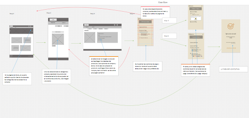
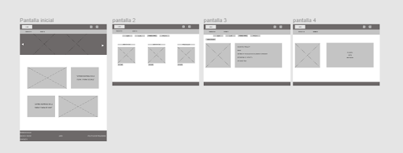

Botanica Joyas
El desafío
Este proyecto trata de dar propuestas de valor para mejora al proceso de compra-venta y exhibición de las joyas de Botánica.
Duración
3 Semanas
El Cliente
Botánica es un emprendimiento desarrollado por Mónica Inostroza
Descripción
Es un emprendimiento desarrollado por Mónica Inostroza que reúne lo mejor de la orfebrería artesanal al tiempo que nos deleita con diseños únicos basados en la flora y fauna chilena, usando materiales como la alpaca, el cobre, el bronce y la plata. Lo que en definitiva convierte sus productos en algo de suma exclusividad. Los productos de Botánica son artesanales, pasando desde el modelado de una pieza, el proceso de fundición y finalizando con técnicas propias de la decoración sobre las joyas.
Roles
Macarena, Carolina e Yrlanda trabajamos en conjunto el proceso de investigación, síntesis e ideación de propuestas y la generación de prototipos y pruebas con usuarios.
Herramientas
Lápiz y papel, Post-it, Google Forms,Google Drive,Trello, Figma
Proceso del Diseño
Design Thinking
Observación contextual
- Inconsistencia en las publicaciones.
- Poca visibilidad a la propuesta de valor.
- Falta de uso de los recursos ofrecidos en Instagram.
- No se da respuesta a las preguntas de usuarios en cuanto a precio.
Entrevista con la Cliente
"Mi objetivo es lograr una mayor expansión de Botanica joyas, al igual que mantener un equilibrio entre las ventas y la creatividad."
Análisis de la Competencia
- Poseen más de una red para vender sus productos todos los emprendimientos evaluados.
- Son muy consistentes con la información que colocan sobre sus productos para que el usuario la pueda tener a su alcance al momento de comprar algún producto.
- La gran mayoría muestra catálogo de sus productos.
- Casi todas han establecido un sistema de pago y envío de productos.
User Persona
- Llama mucho la atención de los usuarios, la propuesta de valor en relación con la naturaleza.
- Los pocos lugares que puedan existir para adquirir joyas de este tipo tienen en su mayoría un sistema de adquisición web si es que son emprendimientos más formales. De lo contrario estos productos solo se adquieren en ferias ocasionales de artesanía.
Insight
- Entregas: Flexibiliza los envios a todo el país.
- Ventajas: El producto es tan creativo que se vende por si mismo.
- Hand-made: Se debe mostrar el proceso sin mostrarla a ella.
- Información del producto: Ahorrar proceso comunicativo mostrando información.
- Propuesta de valor: Imprime fotos de pájaros y así va trabajando pieza por pieza para armar el producto final.
- Trabajos a pedido: Mostrar sus trabajos realizados a pedido agrega valor a su propuesta.
How might we
- ¿Cómo podríamos hacer que la cliente tenga información del producto a su alcance sin recurrir a la emprendedora?
- ¿Cómo podemos resaltar el valor de los detalles y la calidad de las prendas de Botánica joyas?
- ¿Cómo podemos mostrar al usuario que la clienta puede elaborar también: anillos de oro, tocados, todo tipo de pájaros?
- ¿Cómo podríamos indicarle al usuario que la emprendedora puede personalizar algún diseño en particular?
- ¿Cómo podemos mostrar al usuario el proceso creativo de botánica joyas sin exponer demasiado a la clienta?
- ¿Cómo podemos hacer para que los clientes sepan que se hacen envíos por pagar a todo Chile?
- ¿Cómo podemos destacar los beneficios en cuanto a calidad y exclusividad que ofrece Botánica joyas a sus clientes?
- ¿Cómo podemos exponer la visión de Slow design de la clienta a los usuarios?
Ideación
Brainstorming
Cuando hemos podido verbalizar los insights y adecuarlos de una manera en la que sea fácil encontrar ideas y respuestas , se ha hecho un brainstorming o lluvia de ideas que nos ha otorgado las bases para poder generar la estructura de contenido de nuestro sitio web. Dentro de estas podemos destacar las siguientes ideas:
- Información esencial al acceder a la imagen del producto como : materiales, dimensiones, cantidad, nombre y precio.
- Potenciar propuesta de valor a través de la colocación de imágenes en la página de inicio.
- Segmento de contacto para acceder a la emprendedora en caso de solicitar algún pedido especial y segmento about para dar a conocer más sobre la historia de la emprendedora y su propuesta de valor.
- Sección de carrito de compras donde se anuncia la información de envío y de pagos.
Posterior a la idea general de los segmentos más importantes a trabajar en nuestro sitio web se realizó un Moodboard o Museo de arte donde se extrajeron diferentes ideas y referencias estilísticas de las cuales quisimos inspirarnos para comenzar a darle vida al sitio web y al mismo tiempo, resaltar a través del diseño visual la propuesta de valor reflejada por la emprendedora y el estudio previo que hemos realizado.
Museo de Arte
Sitemap
Para poder comenzar a darle estructura y orden al sitio web, se necesito la herramienta llamada “mapa de sitio” o Sitemap, donde se establece la jerarquía y el orden en el cual la información y el contenido del sitio se va a ir distribuyendo, a grandes rasgos este es el resultado:
Wireflow
Nos enfocamos en la acción de compra de un producto por parte del usuario y así considerar aspectos del sitio web que ya no pertenecen a la arquitectura de la información.
Prototipos
Wireframe
prototipo de baja fidelidad donde se da más claridad en la manera a la que se quiere mostrar y distribuir la información visualmente. A través de este se ha podido crear el prototipo de alta fidelidad donde es posible aplicar diseño visual e interacciones.
Prototipos de alta fidelidad
En este punto se ha decidido avanzar con la versión responsiva de la página web ya que se ha considerado que es más efectiva para el target al que va conducida la aplicación. Así como también ha manifestado la emprendedora que desea que su sitio web sea redirigido desde la página de instagram (mayoritariamente se ve desde móviles esta app) para así hacer más intuitiva y cómoda la experiencia de compra.



“Esto que han desarrollado me permitira expandir más mi negocio y darle facilidad a los clientes de tener siempre la información que precisen de cada joya.”
— Monica Inostroza Emprendedora de Botánica